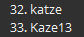

Which post was that?
I probably didn’t read it

Which post was that?
I probably didn’t read it
I think town actually has a chance of correctly voting out Tilgarial today
I laid the groundwork yesterday and I think at least some people vibed with it (although PKR was one of them and he’s dead too)
but I think only Eli suspects EVO so far and if they vote out Tilgarial, Eli will be the next to die most likely
oh! the other thing people do wrong a lot in LyLo is ‘we need to use all our time for discussion’ proceeds to have the first vote placed an hour before EoD
you want the first vote to come about halfway through the phase
admittedly that one is more of an issue on MU than here, but
my case on Tilga?
yeah

Recent 3v2 LYLO I played on MU had first vote 4 minutes before EoD.
Actually 6 minutes, sorry.
And only because I ran out of patience and voted first (I was wolf).
How did it go?
Everyone voted the villager.
Astand
Was it you who made the dayvig soup in zelda mash to snipe me before I could attack apoc
[quote=“WindwardAway, post:5377, topic:87229, full:true”]
Half of Tilgarial’s ISO
I clearly remember the first part of this post. When I first saw it, I was debating whether to take it at face value or whether it was going to be used as a support for Tilgarial to be considered town.
Looking back at it now, I can say that I did think of this multiple times during the game because every time there was suspicion on Tilga, it felt like it was overridden by someone saying Tilga was very towny, and then they didn’t get questioned much.
But why, then, if Tilga is so towny, are they not dead at this point in the game? The rest of you are probably wondering why I’m not dead, and I don’t have a good explanation for that, either tbh, but I’m perfectly aware that my reasoning on Tilga can also be used against me, and that’s a risk I’m willing to take here.
Here’s the first interaction I see between Tilga and Aelin, and it revolves around the PKR/Eevee thing on D1. Nothing really notable here.
at first glance this seemed like a towny post because it didn’t really reach a conclusion, but looking back on it, it doesn’t necessarily come from town. Taking it as NAI.
They later followed it up with this explanation of their takes, which looked pretty good to me since I also read the interaction as T/T.
Aelin made a joke post and Tilga responded, taking it too seriously by the looks of it.
This was where the weird interaction between Aelin and Tilga happened over Tilga misreading the post where Aelin asked lol how he was doing. It seems way too awkward to be planned, but if unintentional, could still be scum theater.
[quote=“Tilgarial, post:812, topic:87229”]
ftr I still think this was a genuine misunderstanding between Aelin and Tilgarial, but the question is whether Aelin was using this as an opportunity to distance from Tilgarial by making it look like an opportunistic vote on a villager.
when Tilga gave this readlist, it matched up with their PKR/Eevee read from earlier in the day, but Marl pointed something out about it.
[quote=“Tilgarial, post:1736, topic:87229”]
[quote=“Marluxion, post:1707, topic:87229”]
Normally I’d want to say that town can be flipfloppy like this, but it’s not that hard for scum to imitate indecisiveness, especially not when the wagons contain no wolves. But I’m taking a hard look again at that “would be fine with wagoning/would not wagon” list. It’s still a hard if but I’m thinking Marl’s analysis here had merit.
i keep trying to quote my post here but the quotes just break literally every time
To this day I still don’t know who did it
No, I was too late to make dayvig.
I think kaze made it.
FAKE KATZE
I must defeat katze to awaken their shadow form to face them
now i know im on record several times saying kaze is the fake, but hear me out
they’ve been playing FM longer than me so they’re real im fake kill them instead :^)
also lol
I mentioned Gorta there
but Tilga’s reaction to my pairing them with Eli was similar to their reaction to my pairing them with Gorta
both of them got the “how could we ever be a team” reaction so I started looking elsewhere
Wait, there’s a player called kaze?
